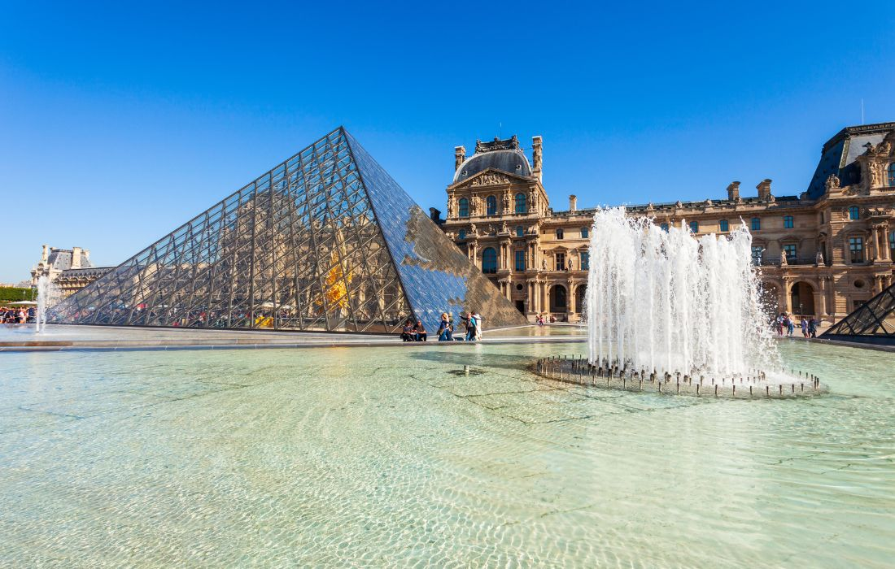
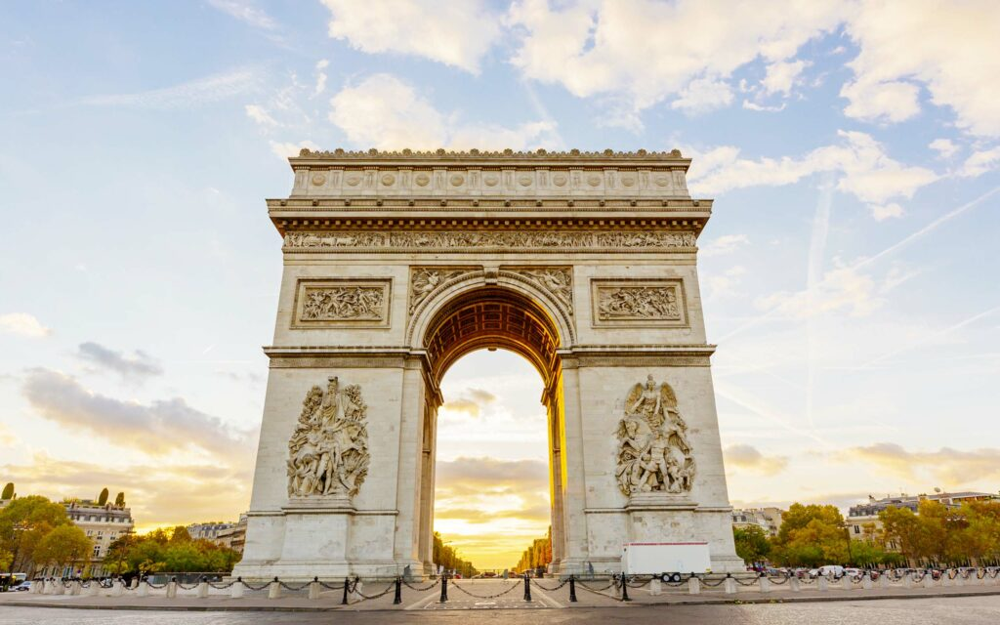
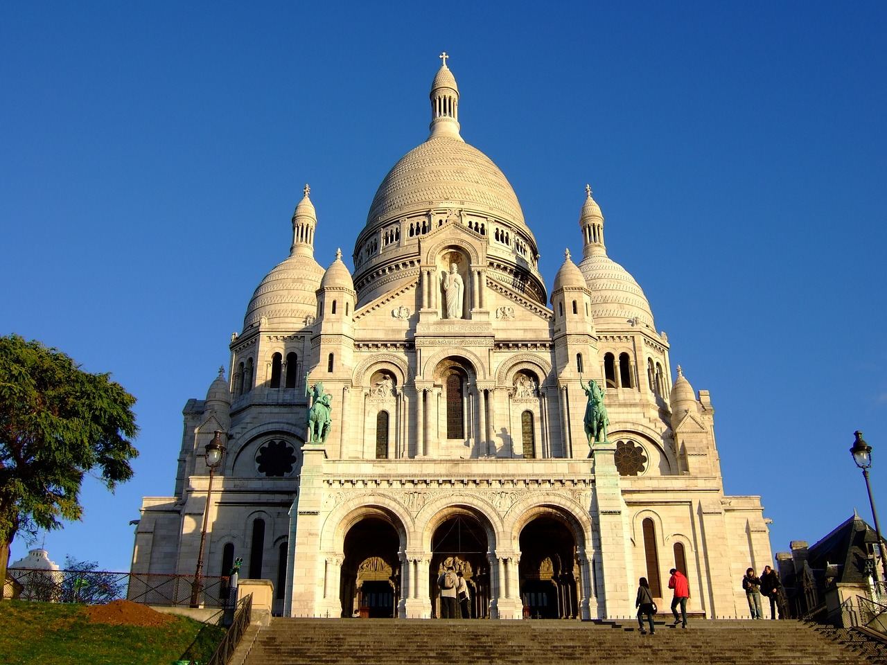
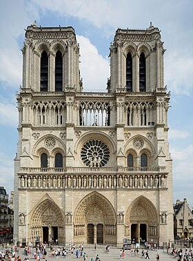

Paris, la capitale de la France, est l'une des villes les plus visitées au monde. Elle est réputée pour ses monuments emblématiques, tels que la Tour Eiffel, le Musée du Louvre, la Cathédrale Notre-Dame et l'Arc de Triomphe. Paris est également célèbre pour sa mode, sa gastronomie, son art et sa culture. La ville abrite de nombreux musées, galeries d'art, théâtres, opéras et salles de concert, ainsi que des quartiers pittoresques, tels que Montmartre et le Marais.
Lieux populaires à visiter à Paris
Paris est connue pour ses monuments emblématiques, ses musées et ses attractions culturelles. Voici quelques-uns des lieux les plus populaires à visiter :
- La Tour Eiffel est un symbole emblématique de Paris et l'une des structures les plus reconnaissables au monde. Construite en 1889 pour l'Exposition universelle, la Tour Eiffel mesure 330 mètres de haut et offre une vue imprenable sur la ville. Les visiteurs peuvent monter en ascenseur jusqu'au sommet pour admirer la vue ou dîner dans l'un des deux restaurants de la Tour Eiffel. Le restaurant gastronomique "Le Jules Verne" est situé au deuxième étage et offre une vue imprenable sur Paris.
- Musée du Louvre :Musée du Louvre est l'un des musées les plus célèbres et les plus visités au monde. Il abrite une collection d'art et d'antiquités de renommée mondiale, y compris la célèbre Joconde de Léonard de Vinci. Le musée est situé dans l'ancien palais royal de Louvre et couvre une superficie de 210 000 mètres carrés. Il est divisé en huit départements : les Antiquités égyptiennes, les Antiquités orientales, les Arts de l'Islam, la Peinture, la Sculpture, les Objets d'art, les Arts graphiques et les Antiquités grecques, étrusques et romaines.
- Champs-Élysées : Les Champs-Élysées sont l'une des avenues les plus célèbres de Paris et l'une des artères les plus animées de la ville. Elle s'étend sur 1,9 kilomètre de la Place de la Concorde à l'Arc de Triomphe. Les Champs-Élysées sont bordés de boutiques de luxe, de cinémas, de théâtres, de restaurants et de cafés. C'est également l'un des endroits les plus populaires pour célébrer le Nouvel An et d'autres événements spéciaux. L'Arc de Triomphe, situé à l'extrémité ouest de l'avenue, est un monument emblématique de Paris dédié aux soldats français qui ont combattu et sont morts pour la France.
- Montmartre : Montmartre est un quartier pittoresque de Paris, situé sur une colline dans le nord de la ville. Il est connu pour ses rues pavées, ses cafés bohèmes, ses artistes de rue et sa basilique du Sacré-Cœur. Montmartre était autrefois un village indépendant et a été annexé à Paris en 1860. Le quartier est associé à de nombreux artistes célèbres, tels que Picasso, Van Gogh et Monet, qui y ont vécu et travaillé.
- Cathédrale Notre-Dame : La Cathédrale Notre-Dame est l'un des monuments les plus célèbres de Paris et l'un des chefs-d'œuvre de l'architecture gothique. Construite entre 1163 et 1345, la cathédrale est située sur l'île de la Cité, au cœur de Paris. La cathédrale est célèbre pour ses gargouilles, ses vitraux et sa célèbre flèche, qui a été détruite lors d'un incendie en 2019. La cathédrale est actuellement en cours de restauration et devrait rouvrir au public en 2024.




